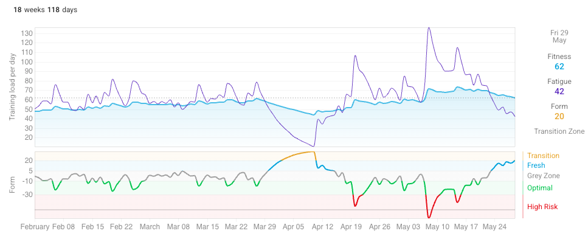

0 to 100km
Two years of trail running, two injuries, and getting to the start line of my first 100km.
This is a somewhat different flavour to the other things I write about here but I think a blog that is personal and actually reflects the thoughts and personal interests of the writer is more interesting to read than just another generic sales pitch/CV.
About two years ago I decided my new thing is ultra trail running. I've always run a bit, maybe once a week or a few times a month, usually in the mountains. It's generally just been a way to relax or cross-train for my main activity, which used to be climbing. Having kids has changed things (understatement) and changed my ability to go out on long missions and adventures that are necessary when climbing is your primary pursuit. Trail running fits much more naturally with my schedule, allowing me to take an hour or two each day to get into the mountains and not spend too much time away from kids and family. If I push this and run at nearly every opportunity I get (including to work, to drop my kids at school, home from work), I've got just enough time to actually perform at what I think is my limit (7-10 hrs a week). That's the appeal here. Ultra trail running is something where I can still reach my physical limits and it allows me to spend time outside and in the mountains.
The journey to my first race was tough. As many people find out, it takes quite a long time for the body to adapt to all that running. My goal race from when I started was the Ultra Trail Cape Town 56k, a super technical race with lots of elevation change in late November each year. I started building up to this in late 2023 but pretty soon got injured (ITB inflammation) in early 2024. I took some time off but every time I tried to start running again it flared back up and ultimately it was about six months until I could start training properly again. This didn't really leave enough time to prepare for the race and so I gave up on that immediate goal and aimed for the following year's race. I trained and trained and was feeling like my goal was within reach and my fitness was improving, when again in June 2025 a new injury flared up, making it seem like I would yet again have to drop from the race.
Rather than get depressed, I got maniacal here. I knew I had five months until the race. Five months is enough time to have:
- two weeks rest
- one month rehab
- one month return to run
- nearly two months of proper training
I figured this was just enough that if all the pieces lined up perfectly, I could still get to the start line fit and ready for the race. I put my head down and executed. There were lots and lots of weeks of boring stationary bike riding, hundreds of hours of strength and cross-training that I find pretty miserable, and weeks of holding back and not being able to do the runs that I enjoy. Through hard work and determination, everything came together, and I arrived on the start line fit and ready to go.
The conditions were pretty rough for the race, super hot and super windy. I ran off course for about 5 km, which didn't help. I cramped for the first time ever running from about hour 5. I finished it in around 8 hours and 50 minutes, which was a lot longer than my goal time, but I was happy to have made it and happy to have successfully completed and enjoyed my first ultra trail race.
My next goal was to run 100km. One of the other big ultra trail races and only UTMB event in Africa is the Mountain Ultra Trail about 400km outside of Cape Town in George in May. I set my sights on this as my first 100K and after a bit of rest started training in late January 2026. My training wasn't super structured. Mostly my aim was to try to reach a minimum of 7 hours of running each week and around 2,000 to 3,000 m of elevation change. In the final 4 weeks of training I would do a 3 to 5 hour, 1,500 to 2000 m elevation change long run and increase running time to 8-10 hrs per week. Those were the main goals. I also wanted to make sure that each week I try to get in one interval session of 4x4 or 6x3 VO2max repeats and another speed session with 6x30 seconds or 10x60 seconds sprints. My VO2max is not particularly impressive and my flat speed is also pretty lame. I figured doing what I can to improve these would help over longer distances. Due to the terrain that I run during regular training (super technical, super rough, high elevation change), my legs get more than enough durability and more than enough uphill and downhill adaptations.
Heading into the race I managed to execute on this training plan as well as I could have hoped for.

It didn't go perfectly. I had a few times when my knee pain flared up but I managed it and things seemed to flare down pretty quickly. I made sure to combine this training with at least 2 to 4 leg strength sessions per week to make sure that any injury risk was mitigated as best as possible. I didn't do as much VO2max and speed training as I'd hoped, often having to skip this due to knee issues or sickness but I still managed to get at least one of these sessions done a week. The next post will talk about my race strategy and a race recap. I feel like I'm going into this in the best state that I could possibly hope for. Up to now in my running career the biggest challenge has always been getting to the start line. Despite a short sickness one week before this race, I'm fit and ready to go.